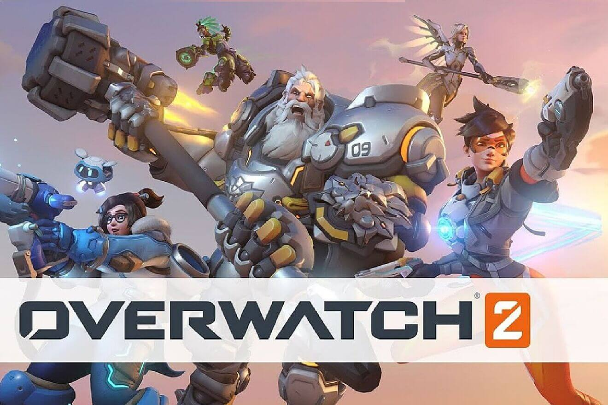

Videojuegos mas recientes
Call of Duty: Modern Warfare 2

Call of Duty: Modern Warfare II es un videojuego de disparos en primera persona desarrollado por Infinity Ward y publicado por Activision, lanzandose para PlayStation 4, PlayStation 5, Xbox One, Xbox Series X y Series S y Microsoft Windows
God of War: Ragnarök

God of War: Ragnarök es un videojuego de acción y aventuras desarrollado por Santa Monica Studio y publicado por Sony Interactive Entertainment. Se lanzó en todo el mundo el 9 de noviembre de 2022 para PlayStation 4 y PlayStation 5, lo que marca el primer lanzamiento entre generaciones de la serie.
Overwatch 2

Overwatch 2 es un videojuego de disparos en primera persona. Fue desarrollado y publicado por Blizzard Entertainment. Es una secuela del hero shooter de 2016 Overwatch.
EA SPORTS FIFA 23

FIFA 23 es un videojuego de simulación de fútbol publicado por Electronic Arts. Es la trigésima y última entrega de la serie FIFA desarrollada por EA Sports y lanzada en todo el mundo el 30 de septiembre de 2022 para PC, Nintendo Switch, PlayStation 4, PlayStation 5, Xbox One, Xbox Series X/S y Google Stadia.
Evil West

Evil West es un próximo videojuego de disparos en tercera persona desarrollado por Flying Wild Hog y publicado por Focus Entertainment. El juego se lanzará el 22 de noviembre de 2022 para Windows, PlayStation 4, PlayStation 5, Xbox One y Xbox Series X/S.
Spider-Man: Miles Morales
Marvel's Spider-Man: Miles Morales es un videojuego de acción y aventuras desarrollado por Insomniac Games y publicado por Sony Interactive Entertainment para PlayStation 4 y PlayStation 5. Está basado en el superhéroe de Marvel Comics Miles Morales.